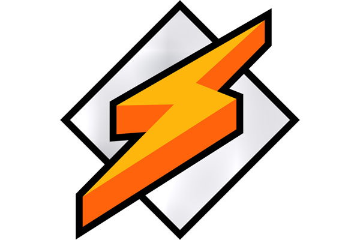

Recuerdo hace muchísimos años, cuando utilizaba Windows que la primera aplicación que instalaba cada vez que me tocaba reiniciar el Sistema Operativo era Winamp. Hoy en 2021, puedo tener Winamp en mi escritorio de la mano de audacious y gracias a un Skin.

Vamos a ver como cambiar el Skin al de Winamp y dar este aspecto a audacious.
Recuerda que audacious es un player similar a Winamp, muy liviano.
Para instalarlo desde los repositorios oficiales:
Para cambiar el skin, clicaremos sobre la aplicación con el botón derecho del ratón y seleccionaremos ver >> visualizaciones…
Los skins están situados en el directorio /usr/share/audacious/Skins/, así utilizar cualquier otro es tan sencillo como copiar el archivo zip o wsz en esta ruta.
Como mencioné anteriormente, es posible instalar cualquier skin de Winamp 2.x. Para ello simplemente se deben copiar los archivos ZIP o WSZ en el directorio:
En gnome-look.org hay un clon del skin de Winamp 2 Winamp Classic Skin. Con mi navegador he descargado el archivo .zip. Este archivo quedará dentro del directorio Descargas.
En mi repositorio he dejado un skin por si desaparece
Ahora nos situamos dentro del directorio donde están los skin:
Ahora en la ruta en la que estamos, descomprimiremos el el archivo 64790-Winamp.tar.gz.
Ahora clicando con el botón derecho del ratón sobre la aplicación, no iremos a ver >> visualizaciones… >> Apariencia . Selecciona entre los Skins y selecciona el de Winamp.
Publicado por Angel el Saturday 02 October del 2021
También te puede interesar:
Powered by org-bash-blog
Written in OrgMode with Emacs and converted to HTML with Pandoc

Este obra está bajo una licencia de Creative Commons Reconocimiento-NoComercial-CompartirIgual 4.0 Internacional.